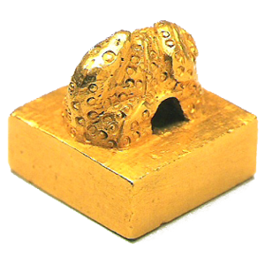

関連リンク
関中候印
十一面観音菩薩立像
薬師如来坐像
七宝古画貼込屏風
野猪
ルクレティア
悲しみの聖母
エバイ（びっくりした男）
カンポ隕石（隕鉄）
三葉虫（オレネルス）
ディメトロドン
金印（きんいん）は金でつくられた印章のこと。
東アジアの冊封体制の元では、皇帝が諸国の王を臣下と認める証しとして、
その定められた地位に応じ玉印・金印・銀印・銅印などが与えられた（印綬）。
日本では、福岡県福岡市東区の志賀島で発見された「漢委奴国王印」が
最も著名であり、国宝に指定され福岡市博物館（福岡市早良区）に収蔵されている。
また、金印が発見されたとされる場所には現在金印公園がある。
滇に与えられた「滇王之印」、光武帝の子である広陵思王 劉荊に与えられた
「廣陵王璽」が中国で出土しており、「魏志倭人伝」には卑弥呼に「親魏倭王」
の金印を与えたことが記されている。
ヨーロッパにおいては、皇帝の出す文書に金印が付された。